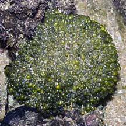
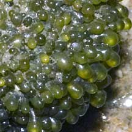
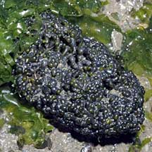
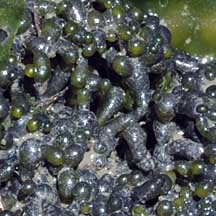
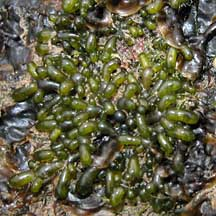

|
|
|
green
seaweeds text index | photo
index
|
| Seaweeds > Division Chlorophyta |
| Beaded
cushion green seaweed Valonia sp.* Family Valoniaceae updated Jan 13 Where seen? This cushion of little green beads is sometimes seen on our Southern shores growing on hard surfaces near reefs. Features: The entire cushion about 2-5cm wide made up of tiny, tightly packed beads. Each translucent bead is a sphere or tear-drop shaped. The beads are actually interconnected. The entire cushion encrusts hard surfaces. Dark to light green or olive green. Sometimes mistaken for Bubble green seaweed (Boergesenia forbesii) which has much larger and more loosely arranged translucent bubble-like shapes. Here's more on how to tell apart some green seaweeds. According to AlgaeBase, there are more than 10 current Valonia species. Human uses: Some species are eaten by people. |
 Sentosa, Jun 07  |
|
 Kusu Island, Sep 10 |
 |
 Labrador, Aug 04 |
*Species are difficult to positively identify without close examination of internal parts.
On this website, they are grouped by external features for convenience of display.
| Beaded cushion green seaweeds on Singapore shores |
| Photos of Beaded cushion green seaweeds for free download from wildsingapore flickr |
| Distribution in Singapore on this wildsingapore flickr map |
| Valonia
species recorded for Singapore Pham, M. N., H. T. W. Tan, S. Mitrovic & H. H. T. Yeo, 2011. A Checklist of the Algae of Singapore.
|
Links
References
|
|
|